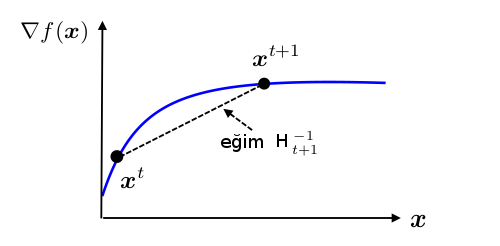

Newton-umsu Metotlar (Quasi-Newton Methods), DFP, BFGS
Bir $f$ hedef fonksiyonunun minimizasyonu için Newton metodunun özyineli algoritması
$$ x_{k+1} = x_k - F(x_k)^{-1} g_k $$
ki $g$ gradyan, $F$ ise Hessian.
Ya da
$$ x_{k+1} = x_k - (\nabla^2 f(x_k))^{-1} \nabla f(x_k) $$
Newton'umsu metotların ana fikri Hessian matrisi yerine sadece gradyan bilgisini kullanarak yaklaşık bir $F_k$ kullanmak, diyelim ki $H_k$. Sonra $f(\cdot)$'un karesel olarak temsilini yazalım, özyineli gidişat sırasında, bir herhangi bir $x_{k+1}$ etrafında Taylor açılımı
$$ m_k(x) \equiv f(x_{k+1}) + \nabla f(x_{k+1})^T (x - x_{k+1}) + \frac{1}{2} (x - x_{k+1}) ^T H_{k+1}^T (x - x_{k+1}) $$
Eğer gradyanı alırsak
$$ \nabla m_k(x) = \nabla f(x_{k+1}) + H_{k+1}^{-1} (x-x_{k+1}) $$
Şimdi $k$ ve $k+1$ noktaları, gradyanları üzerinden bir $H^{k+1}$ ilişkisi ortaya çıkartmak istiyoruz ki çözüp bir sonuç elde edebilelim. Ek denklemler elde etmek için şu akla yatkın şartları öne sürebiliriz, $m$ ve $f$ gradyanları birbirine uysun. Yani,
$$ \nabla m_k(x) = \nabla f(x_k) $$
O zaman, "Newton-umsuluk şartı (quasi-Newton condition)" da denen iki üstteki denklemle beraber, ve açılımda $x$ herhangi bir $x$ olabileceği için onun yerine $x_k$ kullanarak,
$$ \nabla f(x_{k+1}) + H_{k+1}^{-1} (x_k-x_{k+1}) = \nabla f(x_k) $$
$$ H_{k+1}^{-1} (x_k-x_{k+1}) = \nabla f(x_k) - \nabla f(x_{k+1}) $$
$$ H_{k+1}^{-1} (x_{k+1}-x_k) = \nabla f(x_{k+1}) - \nabla f(x_k) $$
Üsttekine sekant denklemi adı veriliyor, şu figürle alakalı,

Yani sekant denklemine göre $H_{k+1}^{-1}$ değeri, yatay kordinattaki $x^{k+1}-x^k$ değişimini, gradyan değişimi $\nabla f(x^{k+1}) - \nabla f(x^k)$'e taşıyor / eşliyor [4].
Kısaltma amaçlı,
$$ H_{k+1}^{-1} \underbrace{(x_{k+1}-x_k)}{y_k} = \underbrace{\nabla f(x{k+1}) - \nabla f(x_k)}_{s_k} $$
$$ H_{k+1}^{-1} y_k = s_k \qquad (1) $$
Özyineli bağlamda bir $H_0$'dan başlayarak ufak değişimlerle sonuca ulaşılmaya uğraşılır. Değişimlerin ufak olması gerekliliği üzerinden ve bu değişimlerin kerte 1 eki ile olması sonucu [4]'teki matris normu ile beraber aslında birazdan türeteceğimiz güncelleme denklemi alınabiliyor. Kerte 1 eki konusu için bkz [5]. Biz farklı bir yönden, eğer ufak değişim kerte 1 ve 2 ile yapılsa nereye varılacağına bakacağız [1, sf. 111].
Kerte 1 eki ile $H_k$'yi $H_{k+1}$ yapmak demek aslında
$$ H_{k+1} = H_k + czz^T $$
demektir. Bunu iki üstteki formül içine koyarsak
$$ s_k = (H_k + czz^T) y_k = H_k y_k + cz (z^T y_k) $$
$z^T y_k$ bir skalar olduğu için
$$ cz = \frac{s_k - H_k y_k}{z^T y_k} $$
Bu denklemi çözen en basit $c,z$ seçenekleri
$$ z = s_k - H_ky_k $$
$$ c = \frac{1}{z^Ty_k} $$
Bu bize kerte 1 güncelleme formülünü verir,
$$ H_{k+1} = H_k + \frac{ (s-H_ky_k) (s-H_ky_k)^T }{(s-H_ky_k) y_k} $$
Ne yazık ki kerte 1 güncelemesinin bazı problemleri var. Bunlardan en önemlisi güncelleme sonrası elde edilen yeni $H_{k+1}$'in pozitif kesin olmasının garanti olmaması, bu sebeple bir sonraki döngüde elde edilecek yön $d_k = -H_k \nabla f(x_k)$'nin bir iniş yönü olmasının garantisinin de tehlikeye girmesi.
Çözüm olarak $H_{k+1}$'in pozitif kesin kalmasını garantileyecek kerte 2 güncellemesi keşfedilmiştir. Yani
$$ H_{k+1} = H_k + c_1z_1z_1^T + c_2z_2z_2^T $$
Pozitif kesinliğin ispatı için [2, sf. 206].
Yine (1)'deki Newton-umsuluk şartıyla beraber
$$ s_k = H_k y_k + c_1 z_1 (z_1^Ty_k) + c_2z_2 (z_2^Ty_k) $$
$z_1$ ve $z_2$ için özgün çözüm olmamasına rağmen üstteki denklemi tatmin edecek seçenekler bulunabilir,
$$ z_1 = s_k, \quad z_2 = H_k y_k, \quad c_1 = \frac{1}{z_1^Ty_k}, \quad c_2 = \frac{1}{z_2^Ty_k} $$
Ve böylece kerte 2 güncellemesi şu hale gelir,
$$ H_{k+1} = H_k + \frac{y_ky_k^T}{s_k^Ty_k} - \frac{(H_k y_k)(H_k y_k)^T}{(H_ky_k)^Ty_k} $$
Bu formüle Davidon-Fletcher-Powell (DFP) formülü adı verilir.
Algoritma şöyle
1) $k=0$ yap. Bir $x_0$'dan başla, ve herhangi bir simetrik, pozitif kesin bir $H_0$ al
2) Eğer $s_k = 0$ ise dur, yoksa $d_k = -H_k g_k$
3) Şunu hesapla
$$ \alpha_k = \arg\min_{\alpha \ge 0} f(x_k + \alpha d_k) $$
$$ x_{k+1} = x_k + \alpha_k d_k $$
4) Hesapla
$$ y_k = \alpha_k d_k $$
$$ s_k = g_{k+1} - g_k $$
$$ H_{k+1} = H_k + \frac{y_ky_k^T}{s_k^Ty_k} - \frac{(H_k y_k)(H_k y_k)^T}{(H_ky_k)^Ty_k} $$
BFGS
DFP ile kerte 2 güncellemesi oluyor böylece $H_{k+1}$ pozitif kesin kalıyor, güzel. Fakat DFP'nin hala sayısal olarak bazı problemleri var. Burada problem Hessian'ın değil Hessian'ın tersinin yaklaşıklamasının güncelleniyor olması. Daha iyi bir seçim Hessian'ın kendisinin yaklaşıklamasının güncellenmesi ve onun üzerinden bir terslik elde edilmesi olmaz mıydı? Evet.
Devam etmeden önce işimize yarayacak başka bir konu, ikizlik konusundan bahsedelim. Eğer DFP formülünün tersinin alırsak belli bir sonuç elde ederiz (bunun benzerini yapacağız). Ama biz bu noktaya (1)'deki
$$ H_{k+1} y_k = s_k $$
ile geldiğimizi biliyoruz, ve üstteki formülde ufak bir takla atarsak
$$ y_k = B_{k+1} s_k $$
sonucuna gelebileceğimizi de biliyoruz, ki $B_k$, $F_k$'nin yaklaşık hali. Dikkat edersek bu yeni Newton-umsuluk kuralı form olarak bir öncekine çok benziyor, sadece $H_k$ yerine $B_k$ var ve $y_k,s_k$ yerleri değişti! Bundan istifade edebiliriz, ve şimdiye kadar yapılan tüm türetme işlemlerini kullanarak ve sadece $y_k,s_k$ yerini değiştirerek $B_k$ için bir güncelleme formülü elde edebiliriz.
$$ B_{k+1} = B_k + \frac{s_ks_k^T}{y_k^Ts_k} - \frac{(B_k s_k)(B_k s_k)^T}{(B_ks_k)^Ts_k} $$
İşte $B_k$'nin BFGS güncellemesi budur, isim Broyden, Fletcher, Goldfarb, and Shannon adlı araştırmacılardan geliyor. Şimdi üsttekinin tersini alırsak arka planda yapılan ve daha stabil olan $H_k$'nin güncellenmesinden faydalanmış oluyoruz, ama hala her adımda bizim ilgilendiğimiz matris tersine erişmiş oluyoruz. Üstteki formülün sağ tarafının tersi için [6]'daki Sherman-Morrison tekniğini kullanacağız. SM formülü neydi?
$$ (A+uv^T)^{-1} = A ^{-1} - \frac{(A^{-1} u)(v^TA^{-1})}{1 + v^T A^{-1} u} $$
eğer $1+v^TA ^{-1} y \ne 0$ ise.
Şimdi eğer ana güncelleme formülünü
$$ B_{k+1} = A_0 + u_0v_0^T + u_1v_1^T $$
formuna getirebilirsek SM kullanabiliriz. Şu eşitlikleri kullanalım,
$$ A_0 = B_k, \quad u_o = \frac{s_k}{s_k^Ty_k}, \quad v_0^T = s_k^T $$
$$ A_1 = B_k + \frac{s_k s_k^T}{s_k^Ty_k} = A_0 + u_0v_0^T, \quad u_1 = -\frac{B_k y_k}{y_k^TB_ky_k} $$
$$ v_1^T = y_k^T B_k $$
Böylece
$$ B_{k+1} = A_0 + u_0v_0^T + u_1v_1^T $$
formülüne erişmiş olduk. Bu $B_{k+1}$ üzerinden bir ters elde etmek için, ki bu sonuca $H_{k+1}^{BFGS}$ diyelim,
$$ H_{k+1}^{BFGS} = B_{k+1}^{-1} $$
$$ = (A_1 + u_1v_1^T)^{-1} $$
SM açılımına göre,
$$ = A_1^{-1} - \frac{A_1^{-1}u_1v_1^TA_1^{-1}}{1+v_1^TA_1^{-1}u_1 } $$
$A_1^{-1}$ de SM ile açılacak tabii (onun için bu $A_1$'i belli bir forma getirdik)
$$ H_{k+1}^{BFGS} = A_0^{-1} - \frac{A_0^{-1} u_0v_0^T A_0^{-1}}{1+v_0^TA_0^{-1}u_0 } - \frac { (A_0^{-1} - \frac{A_0^{-1} u_0v_0^T A_0^{-1}}{1+v_0^TA_0^{-1}u_0}) u_1v_1^T (A_0^{-1} - \frac{A_0^{-1} u_0v_0^T A_0^{-1}}{1+v_0^TA_0^{-1}u_0}) } {1 + v_1^T (A_0^{-1} - \frac{A_0^{-1} u_0v_0^T A_0^{-1}}{1+v_0^TA_0^{-1}u_0})u_1} $$
Dikkat edersek $A_0 = B_k$. O zaman $A_0^{-1} = B_k^{-1} = H_k$. Bu eşitliği ve ilk başta gösterdiğimiz notasyonu kullanarak,
$$ H_{k+1}^{BFGS} = H_k - \frac{H_ks_ks_k^TH_k}{y_k^Ts_k + s_k^TH_ks_k} - \frac {(H_k - \frac{H_ks_ks_k^TH_k}{y_k^Ts_k + s_k^TH_ks_k}) (\frac{-B_k y_ky_k^TB_k}{y_k^TB_ky_k}) } {1+y_k^TB_k (H_k - \frac{H_ks_ks_k^TH_k}{y_k^Ts_k + s_k^TH_ks_k})(\frac{-B_k y_ky_k^TB_k}{y_k^TB_ky_k})} $$ $$ \times (H_k - \frac{H_ks_ks_k^TH_k}{y_k^Ts_k + s_k^TH_ks_k}) $$
Bazı çarpımları yaptıktan sonra ve $H_k = B_k^{-1}$ olduğunu hesaba katarak, yani
$$ H_kB_k = B_kH_k=I_n $$
diyerek, alttakini elde ediyoruz,
$$ H_{k+1}^{BFGS} = H_k - \frac{H_ks_ks_k^TH_k}{s_k^Ty_k + s_k^TH_ks_k} - \frac { (1 - \frac{H_k s_ks_k^T}{s_k^T y_k + s_k^TH_ks_k}) (-y_ky_k^T) (1 - \frac{s_ks_k^TH_k}{s_k^Ty_k + s_k^TH_ks_k}) } {y_k^T B_k y_k + y_k^T (B_k - \frac{s_k^Ts_k}{s_k^Ty_k + s_k^TH_ks_k})(-y_k) } $$
Sembolik işlemlerimize devam ediyoruz. $y_k$ ve $y_k^T$ çarparak alttakini elde ediyoruz,
$$ H_{k+1}^{BFGS} = H_k - \frac{H_ks_ks_k^TH_k}{s_k^Ty_k + s_k^TH_ks_k} - \frac { (\frac{H_k s_ks_k^Ty_k}{s_k^T y_k + s_k^TH_ks_k} - y_k) (x_k^T - \frac{y_k^T s_ks_k^TH_k}{s_k^Ty_k + s_k^TH_ks_k}) } { y_k^TB_ky_k - y_k^T B_k y_k + \frac{y_k^T s_ks_k^Ty_k}{s_k^Ty_k + s_k^TH_ks_k} } $$
Üstte en son terimdeki bölendeki terimleri iptal edince ve daha fazla çarpma işlemi yapınca,
$$ H_{k+1}^{BFGS} = H_k - \frac{H_ks_ks_k^TH_k}{s_ky_k + s_k^TH_ks_k} + \frac {\frac{H_k s_k(s_k^T y_k) (y_k^T s_k)s_k H_k }{s_k^T y_k + s_k^T H_k s_k}} {(y_k^T s_k)(s_k^T y_k)} + \frac {y_k y_k^T (s_k^T y_k + s_k^T H_k s_k) } {(y_k^T s_k)(s_k^T y_k)} - $$ $$ \frac {H_k s_k (s_k^T y_k) y_k^T + y_k s_k^T H_k } {(y_k^T s_k)(s_k^Ty_k)} $$
- ve 5. terimlerde daha da basitleştirme yapınca
$$
H_{k+1}^{BFGS} =
H_k - \frac{H_k s_k s_k^T H_k}{s_k^T y_k + s_k^T H_k s_k} +
\frac{H_k s_k s_k^T H_k}{s_k y_k + s_k^T H_k s_k} +
\frac{y_k y_k^T (s_k^T y_k + s_k^T H_k s_k)}{(y_k^T s_k)(s_k^Ty_k)} -
\frac{H_k s_k y_k^T + y_ks_k^T H_k}{y_k^T s_k}
$$
Dikkat edersek 2. ve 3. terimleri birbirini iptal ediyor, o zaman, ve 4. terimi alternatif bir formda gösterirsek,
$$ H_{k+1}^{BFGS} = H_k + \frac{y_k y_k^T}{y_k^T s_k} \left( 1 + \frac{s_k^T H_k s_k}{s_k^T y_k} \right) - \frac{H_k s_k y_k^T + y_k s_k^T H_k}{y_k^T s_k} $$
Nihai BFGS formülüne erişmiş olduk. Bu formülü alttaki gibi de gösterebiliriz [7],
$$
H_{k+1}^{BFGS} =
\left( I - \frac{s_k y_k^T}{s_k y_k} \right)
H_k
\left( I - \frac{s_k y_k^T}{y_k^T s_k} \right) +
\frac{y_k y_k^T}{y_k^T s_k}
$$
Bir örnek üzerinde görelim,
import pandas as pd
import numpy as np
import matplotlib.pyplot as plt
import numpy.linalg as lin
eps = np.sqrt(np.finfo(float).eps)
def rosen(x):
return 100*(x[1]-x[0]**2)**2+(1-x[0])**2
def rosen_real(x):
gy =[-400*(x[1]-x[0]**2)*x[0]-2*(1-x[0]), 200*(x[1]-x[0]**2)]
return rosen(x), gy
def linesearch_secant(f, d, x):
epsilon=10**(-5)
max = 500
alpha_curr=0
alpha=10**-5
y,grad=f(x)
dphi_zero=np.dot(np.array(grad).T,d)
dphi_curr=dphi_zero
i=0;
while np.abs(dphi_curr)>epsilon*np.abs(dphi_zero):
alpha_old=alpha_curr
alpha_curr=alpha
dphi_old=dphi_curr
y,grad=f(x+alpha_curr*d)
dphi_curr=np.dot(np.array(grad).T,d)
alpha=(dphi_curr*alpha_old-dphi_old*alpha_curr)/(dphi_curr-dphi_old);
i += 1
if (i >= max) and (np.abs(dphi_curr)>epsilon*np.abs(dphi_zero)):
print('Line search terminating with number of iterations:')
print(i)
print(alpha)
break
return alpha
def bfgs(x, func):
H = np.eye(2)
tol = 1e-20
y,grad = func(x)
dist=2*tol
epsilon = tol
iter=0;
while lin.norm(grad)>1e-6:
value,grad=func(x)
p=np.dot(-H,grad)
lam = linesearch_secant(func,p,x)
iter += 1
xt = x
x = x + lam*p
s = lam*p
dist=lin.norm(s)
newvalue,newgrad=func(x)
y = np.array(newgrad)-grad
rho=1/np.dot(y.T,s)
s = s.reshape(2,1)
y = y.reshape(2,1)
tmp1 = np.eye(2)-rho*np.dot(s,y.T)
tmp2 = np.eye(2)-rho*np.dot(y,s.T)
tmp3 = rho*np.dot(s,s.T)
H= np.dot(np.dot(tmp1,H),tmp2) + tmp3
#print ('lambda:',lam)
print (xt)
print ('iter',iter)
x=np.array([-1.0,0])
bfgs(x,rosen_real)
[1. 1.]
iter 19
Eğer gradyan yerine yaklaşıksal gradyan hesap fonksiyonunu kullanırsak,
def _approx_fprime_helper(xk, f, epsilon):
f0 = f(xk)
grad = np.zeros((len(xk),), float)
ei = np.zeros((len(xk),), float)
for k in range(len(xk)):
ei[k] = 1.0
d = epsilon * ei
df = (f(xk + d) - f0) / d[k]
if not np.isscalar(df):
try:
df = df.item()
except (ValueError, AttributeError):
raise ValueError("The user-provided "
"objective function must "
"return a scalar value.")
grad[k] = df
ei[k] = 0.0
return grad
def rosen_approx(x):
g = _approx_fprime_helper(x, rosen, eps)
return rosen(x),g
bfgs(x,rosen_approx)
[0.99999552 0.99999104]
iter 19
yine optimum noktaya erişmiş oluyoruz.
Yakınsaklık garantileri açısından, Newton-umsu metotlar her adımda bir pozitif kesin $H_k$ ürettikleri için çizgi aramasıyla birleştirilmiş normal Newton metotlarıyla aynı şekilde sürekli iniş özelliğine sahip olacaktır, bu sebeple 1. derecede optimallik şartı açısından, nereden başlanırsa başlansın bir minimuma ulaşacaklardır. Detaylar için [2].
Kaynaklar
[1] Dutta, Optimization in Chemical Engineering
[2] Zak, An Introduction to Optimization, 4th Edition
[3] Bayramlı, Hesapsal Bilim, Sayısal Entegrasyon ve Sonlu Farklılıklar ile Sayısal Türev
[4] Chen, ELE522 - Large Scale Optimization Lecture, Princeton, http://www.princeton.edu/~yc5/ele522_optimization/
[5] Bayramlı, Lineer Cebir, Ders 8, Kerte Konusu
[6] Bayramlı, Lineer Cebir, Ekler, Sherley-Morrison Formülü
[7] Fletcher, A new approach to variable metric problems